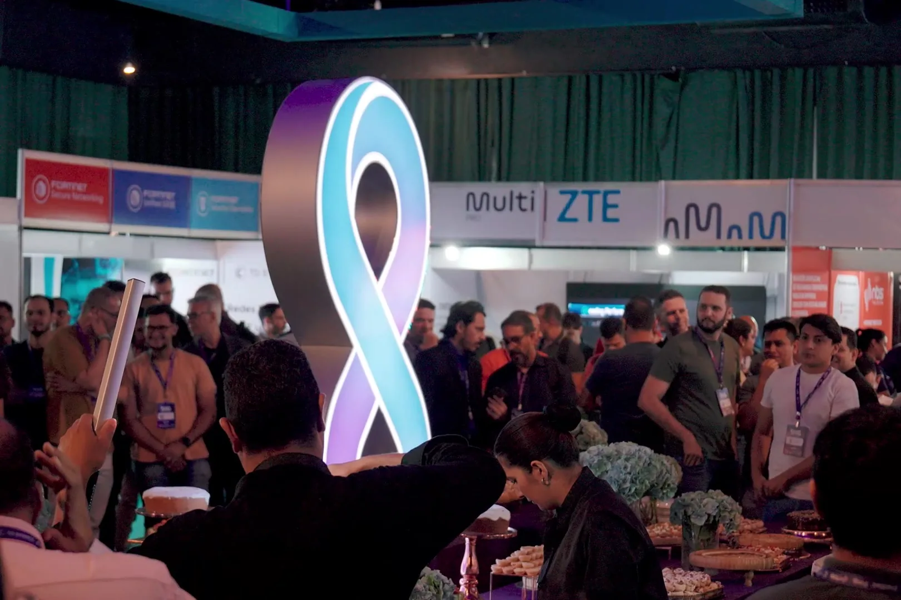
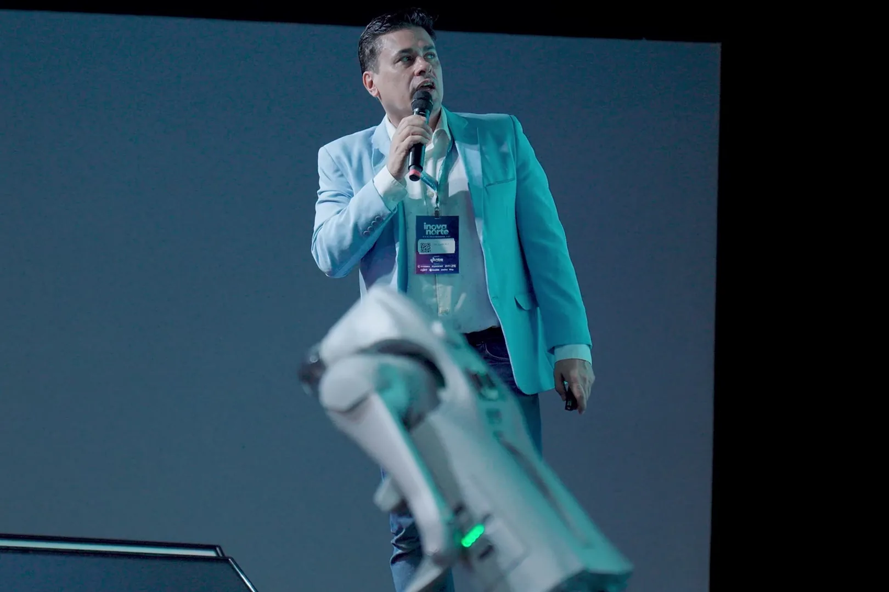
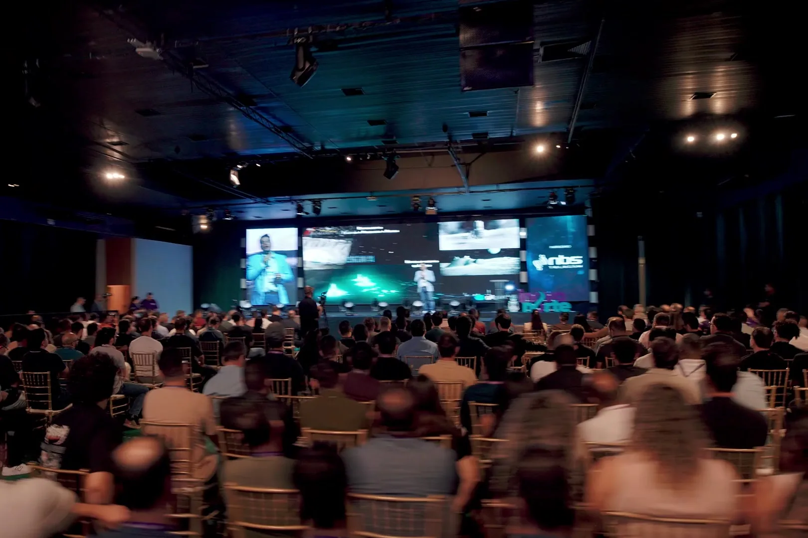
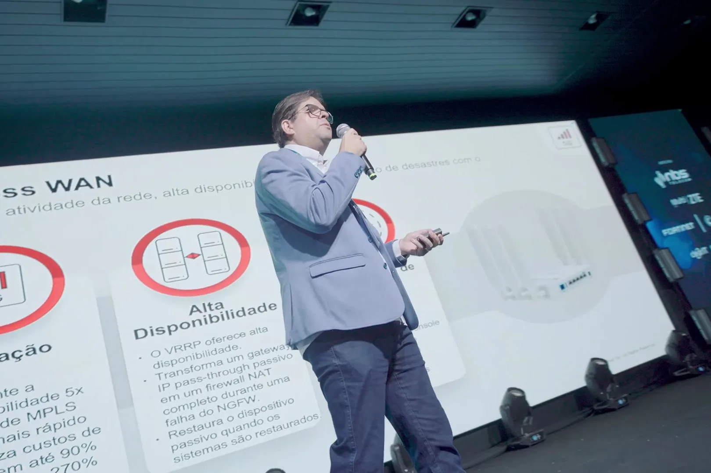
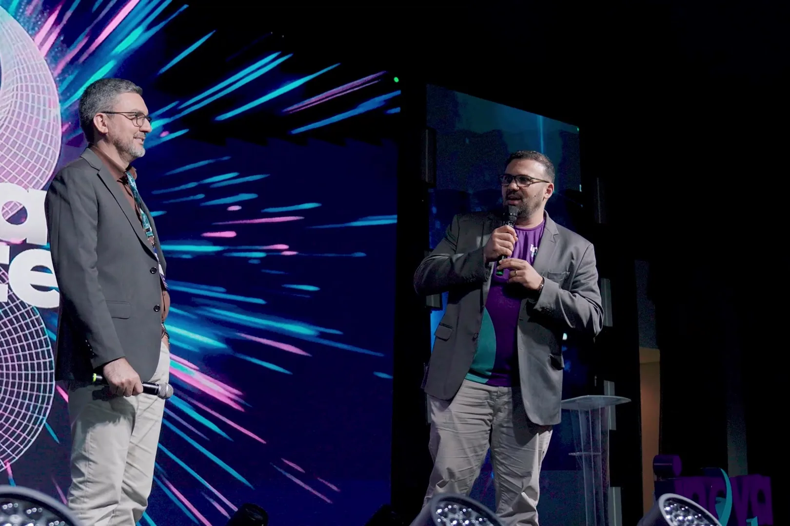

Conectar a Amazônia
O desafio da infraestrutura digital na maior região do Brasil.
Ver programação →Cinco painéis e dois dias para discutir infraestrutura, dados, IA e serviço público com quem conecta o Norte.
Mais de 400 pessoas na mesma sala. Role para entrar.
O desafio da infraestrutura digital na maior região do Brasil.
Ver programação →IA e Dados transformando os Serviços Públicos.
Ver programação →Como vencer a última fronteira da infraestrutura digital brasileira?
Ver programação →Qual é a arquitetura ideal para conectar o Norte?
Ver programação →Como tecnologia e conectividade podem redesenhar os serviços públicos na Amazônia?
Ver programação →Mais de 400 pessoas de empresas, universidades e governo na mesma sala. Veja como foi a edição anterior.
Imagens: edição anterior
O Inova Norte é o principal evento de inovação e tecnologia do Norte do Brasil, criado para reunir empresas, especialistas, universidades e representantes do poder público em torno dos desafios tecnológicos que moldam o futuro da região e do país.
Mais do que um evento de palestras, o Inova Norte nasce da necessidade de aproximar o Norte do Brasil das principais discussões tecnológicas nacionais — levando para a região nomes de referência, conteúdo técnico de ponta e oportunidades reais de conexão entre mercado, academia e governo.
Em 2026, o evento chega com o tema “Os Desafios da Soberania Digital na Amazônia”, colocando em pauta temas estratégicos como infraestrutura, conectividade e Data Center — discussões essenciais para o desenvolvimento tecnológico e econômico da Amazônia.
Ao reunir parceiros, patrocinadores, instituições de ensino e lideranças do setor, o Inova Norte se consolida como um espaço de posicionamento estratégico para quem quer estar à frente das transformações digitais que impactam a região.

01 / 05Dia 1 · quinta, 12/11 · 11h–12h30O desafio da infraestrutura digital na maior região do Brasil.
Ver programação →
02 / 05Dia 1 · quinta, 12/11 · 14h–15h30IA e Dados transformando os Serviços Públicos.
Ver programação →
03 / 05Dia 2 · sexta, 13/11 · 11h–12h30Como vencer a última fronteira da infraestrutura digital brasileira?
Ver programação →
04 / 05Dia 2 · sexta, 13/11 · 14h–15h30Qual é a arquitetura ideal para conectar o Norte?
Ver programação →
05 / 05Dia 2 · sexta, 13/11 · 16h–17hComo tecnologia e conectividade podem redesenhar os serviços públicos na Amazônia?
Ver programação →Imagens: edição anterior
Lideranças do governo, da academia, de entidades da internet e do mercado de telecom.

Hotel parceiro do Inova Norte, próximo ao local do evento.
Av. Carlos Gomes, 756, Caiari, Porto Velho/RO, CEP 76801-150
12 e 13 de novembro de 2026 · Murano Eventos